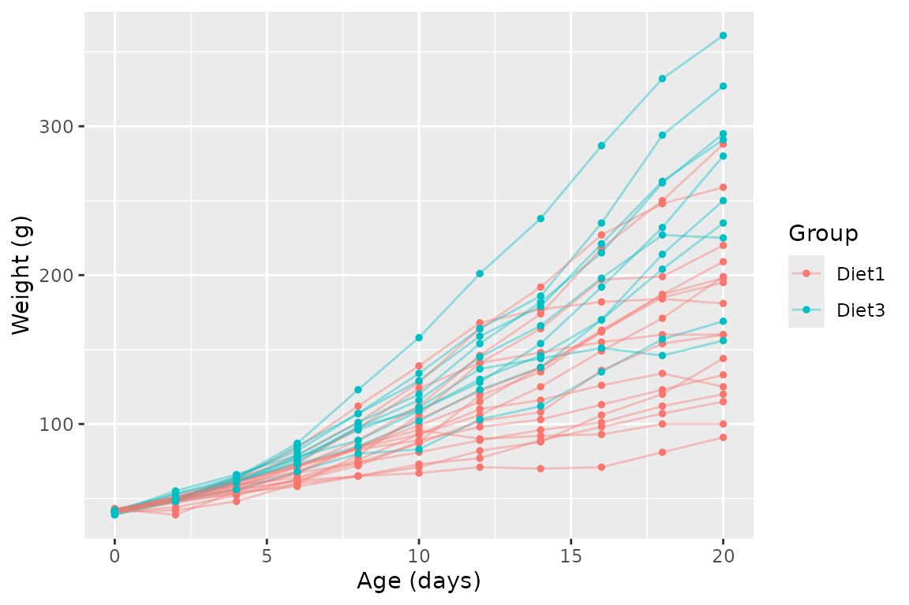

library(keRnel)
library(BayesOmics)
library(ggplot2)Every earlier example started from simu_db_kernel().
Real data needs the same five columns, but getting there involves
choices simu_db_kernel() made for you: which axis is
Input, what counts as a replicate, and whether every group
actually shares the same IDs.
datasets::ChickWeight (shipped with base R, no omics data
needed to illustrate this) stands in for a real longitudinal
measurement:
| BayesOmics concept | Here |
|---|---|
Input |
age in days |
ID |
one measurement day ("Day_0", …) |
Sample |
one chick (a real biological replicate) |
Group |
diet |
Output |
body weight (g) |
Restrict to a shared ID set
group_diff()/compute_group_diff()/calculate_group_overlaps()
require both groups to share the exact same set of IDs.
Real longitudinal data has dropout, so this has to be enforced
explicitly – chicks missing any of the 11 standard weighing days are
dropped:
data("ChickWeight", package = "datasets")
cw <- as.data.frame(ChickWeight)
cw$Diet <- as.character(cw$Diet)
cw$Chick <- as.character(cw$Chick)
std_days <- c(0, 2, 4, 6, 8, 10, 12, 14, 16, 18, 20)
has_all_days <- function(sub) all(std_days %in% sub$Time)
ok_chicks <- names(which(vapply(split(cw, cw$Chick), has_all_days, logical(1))))
cw2 <- cw[cw$Chick %in% ok_chicks & cw$Time %in% std_days, ]
length(ok_chicks)
#> [1] 46Reshape into the long format
build_group <- function(diet_label, group_label) {
sub <- cw2[cw2$Diet == diet_label, ]
chicks <- sort(unique(sub$Chick))
do.call(rbind, lapply(seq_along(chicks), function(s) {
one <- sub[sub$Chick == chicks[s], ]
one <- one[order(one$Time), ]
data.frame(ID = paste0("Day_", one$Time), Group = group_label, Sample = s,
Input = one$Time, Output = one$weight, stringsAsFactors = FALSE)
}))
}
data_all <- rbind(build_group("1", "Diet1"), build_group("3", "Diet3"))
head(data_all, 4)
#> ID Group Sample Input Output
#> 1 Day_0 Diet1 1 0 42
#> 2 Day_2 Diet1 1 2 51
#> 3 Day_4 Diet1 1 4 59
#> 4 Day_6 Diet1 1 6 64Each chick is one replicate line, colored by diet – the same
long-format data frame every other article’s
simu_db_kernel() output has, just built by hand here
instead of simulated:
ggplot(data_all, aes(Input, Output, color = Group, group = interaction(Group, Sample))) +
geom_line(alpha = 0.4) +
geom_point(size = 1) +
labs(x = "Age (days)", y = "Weight (g)")
Fit and compare, as usual
Nothing pipeline-specific changes from here – prior_cov
is set from the data’s own inter-chick variance rather than guessed:
prior_cov_val <- mean(with(data_all, tapply(Output, list(Group, Input), var)), na.rm = TRUE)
kern <- variance_kernel(variance = 2000) * se_kernel(length_scale = 5) +
white_noise_kernel(noise = 100)
d1 <- data_all[data_all$Group == "Diet1", ]
hp_opt <- fit_kernel(kern, d1, prior_mean = mean(d1$Output), prior_cov = prior_cov_val)
kern_opt <- kupdate(kern, variance = hp_opt[["variance"]],
length_scale = hp_opt[["length_scale"]], noise = hp_opt[["noise"]])
posterior <- posterior_mean(data_all, kern_opt, mu_0 = mean(data_all$Output), lambda_0 = 1)
calculate_group_overlaps(posterior)
#> Warning in stats::pchisq(t_val, df = d, ncp = lambda2): pnchisq(x=6.81825e+06,
#> f=11, theta=1.11571e+07, ..): not converged in 1000000 iter.
#> Diet1 Diet3
#> Diet1 1 0
#> Diet3 0 1
compute_group_diff(posterior, per_feature_metric(wasserstein_metric(), power = 0.5))
#> Diet1 Diet3
#> Diet1 0.00000 37.61274
#> Diet3 37.61274 0.00000The joint OVL is a numerical 0 – exactly the saturation
described in the metric-choice article, expected once two full growth
curves are compared across 11 days at once. The per-feature Wasserstein
(~38 g) stays interpretable: on average, the two diets differ by about
38 g at a given day. This is exactly the case
group_diff(posterior) (no metric specified) would have
picked automatically: with 11 features, above its default threshold, it
returns the per-feature Wasserstein directly rather than the saturated
OVL.
Takeaways
- Real data needs an explicit ID-alignment step that a simulator gives you for free – decide it before fitting, not after an error.
- Choosing which real axis maps to
IDvs.Samplevs.Inputis a domain decisionsimu_db_kernel()cannot make for you.
Bonus: let an AI assistant write the reshaping code for you
The two steps above – restricting to a shared ID set,
then reshaping to the long format – are mechanical once you know which
of your raw columns plays which role, but the mapping itself is
dataset-specific. The following prompt (fill in the bracketed
description of your own data) gives an AI assistant everything it needs
to write that reshaping code directly, following the same rules
ChickWeight was just reshaped by:
I have a dataset I want to reshape into the long format required by the R
package BayesOmics (Bayesian kernel-based differential analysis). BayesOmics
needs a data frame with these columns:
- ID: the feature identifier (e.g. a genomic position, a protein, a
measurement day/timepoint) -- the axis along which correlation is modeled.
- Group: the experimental condition/group each observation belongs to.
- Sample: the replicate identifier within a group (e.g. a subject, a
biological replicate, an individual).
- Input: the NUMERIC covariate the kernel operates on (often the same
information as ID, but as a number -- e.g. genomic position, age, dose).
Within a single Group, each ID must map to exactly one Input value.
- Output: the observed numeric measurement.
- (Optional) Input_ID: only needed if Input has more than one dimension per
feature (e.g. two covariates at once) -- one row per Input_ID, with Output
repeated identically across the rows of one observation.
Constraints to respect:
1. Exactly one row per (ID, Group, Sample[, Input_ID]).
2. Within a Group, each ID must map to exactly one Input value (no
duplicated/inconsistent Input for the same ID).
3. Every Group I want to compare should share the exact same set of IDs --
drop or filter out whatever breaks this (e.g. missing data/dropout),
and report how much was dropped.
4. Group and ID should be character columns, not factors.
Here is a description of my raw dataset: [describe your raw column names and
what each one means -- which column is the group/condition, which is the
replicate, which is the numeric position/covariate, which is the
measurement, and any known data-quality issues like missing values].
Please write R code (base R or dplyr/tidyr, whichever is cleaner) that:
1. Loads/reads my raw data.
2. Identifies and handles any IDs missing from at least one group (report
how many rows/subjects are dropped and why).
3. Reshapes it into the BayesOmics long format described above.
4. Prints head() of the result, and confirms for at least two groups that
they share the exact same set of ID values (e.g. via setequal()).